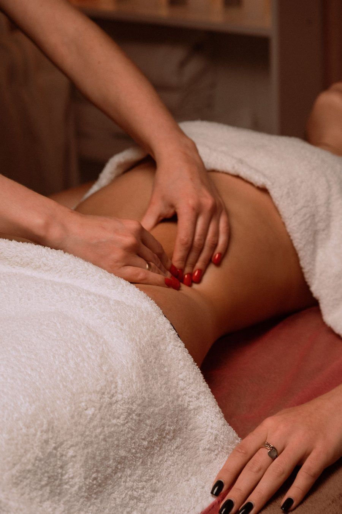

Home / Lymphatic massage after surgery
Lymphatic massage for post-op recovery.
Gentle lymphatic drainage massage after BBL, lipo, tummy tuck and other body procedures, to help with swelling while you heal.
- After
- BBL, lipo, tummy tuck
- Each session
- 1 hour
- 5-session package
- $500

What it does
After body surgery, fluid builds up and swelling can take weeks to settle. Lymphatic drainage uses light, rhythmic pressure to move that fluid along, so you feel less tight and puffy as you heal.
Many surgeons recommend it during recovery. Always check with yours on when to start.
Each session includes
- An hour of lymphatic drainage massage
- LED photo therapy
- RF skin tightening
A single session is $120. The 5-session package is $500, and the 10-session package is $999. Payment plans through Cherry, as low as 0% interest for up to 12 months.
Before your first session
Check with your surgeon
Ask when you're cleared to start lymphatic massage, and bring your post-op instructions.
Wear your garment
Come in your compression garment, or bring it with you to put back on after.
The session
Light, steady pressure over the treated areas for about an hour, followed by photo therapy and RF.
Keep it regular
Sessions work best close together during early recovery. Crystal will suggest a schedule.

Recovery in careful hands
Crystal has owned and run the spa since 2019 and does every session herself.
- Florida licensed massage therapist, MA 93506
- Licensed massage establishment, MM 41929
Recovery questions
When can I start after surgery?
That's up to your surgeon. Ask when you're cleared for lymphatic massage, and bring your post-op instructions to your first visit.
Does it hurt?
It shouldn't. Lymphatic drainage uses light pressure, and Crystal works gently around healing areas.
How many sessions will I need?
It depends on your procedure and how you're healing. Many clients start with the 5-session package and add more if needed.
Book your recovery sessions.
Bring your surgeon's post-op instructions, and Crystal will plan your sessions around them.
Pay over time with Cherry — as low as 0% interest for 12 monthsHours
Tuesday to Saturday, 10am to 6pm
Sunday and Monday, closed